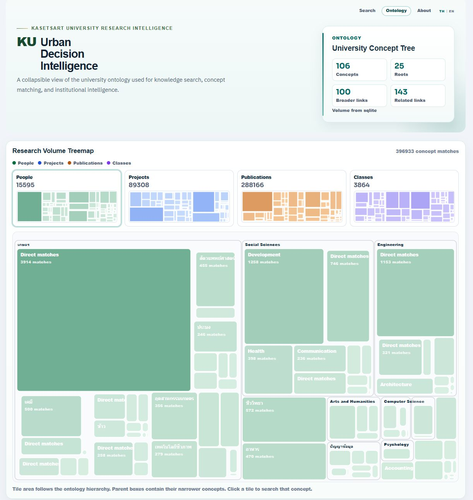

Ontology Treemap คือก้าวต่อของ University Knowledge Graph และ Research Intelligence
{kind=link}

ข้อมูลวิจัยของมหาวิทยาลัยจำนวนมากมักกระจายอยู่ในรูปแบบรายชื่อคน รายชื่อโครงการ รายชื่อผลงาน หรือรายชื่อหน่วยงาน แต่ถ้ามองมหาวิทยาลัยเพียงเป็นฐานข้อมูล เราจะเห็นแค่รายการแยกส่วน และอาจพลาดความสัมพันธ์สำคัญที่ซ่อนอยู่ในระบบความรู้ทั้งหมด
Ontology Treemap ของ KU Urban Decision Intelligence จึงเปลี่ยนมุมมองจากการค้นข้อมูลเป็นรายชิ้น ไปสู่การมองมหาวิทยาลัยในฐานะระบบความรู้ที่มีความสัมพันธ์ซ้อนกันอยู่จำนวนมาก ทั้งความเชี่ยวชาญ งานวิจัย โครงการ สิ่งพิมพ์ บุคลากร และองค์ความรู้
หน้า treemap นี้ไม่ได้ตอบเพียงว่า “ใครทำอะไร” แต่ช่วยให้เห็นว่ามหาวิทยาลัยมีความรู้เรื่องใดมากน้อยเพียงใด ศาสตร์ใดเชื่อมกับศาสตร์ใด ประเด็นใดเป็นฐานกำลังสำคัญของมหาวิทยาลัย และข้อมูลเหล่านี้จะถูกใช้ในการตัดสินใจเชิงยุทธศาสตร์ได้อย่างไร
ตัวอย่างในภาพแสดงการจับคู่แนวคิดเกือบสี่แสนรายการจากคน โครงการ ผลงานตีพิมพ์ และรายวิชา แล้วจัดวางตามโครงสร้าง ontology ของมหาวิทยาลัย พื้นที่แต่ละช่องจึงไม่ใช่แค่กราฟสวย ๆ แต่สะท้อนปริมาณร่องรอยความรู้ที่มีอยู่จริงในระบบ
จาก dashboard ที่ดูแล้วจบ ไปสู่ infrastructure สำหรับเข้าใจตนเอง
สิ่งที่มหาวิทยาลัยควรมีมากขึ้นไม่ใช่เพียงรายงานย้อนหลังหรือ dashboard ที่เปิดดูแล้วจบ แต่คือinfrastructure สำหรับการเข้าใจตนเอง ระบบลักษณะนี้ช่วยให้มหาวิทยาลัยเห็นว่าความรู้ของตนเองกระจุกหรือกระจายอยู่ตรงไหน จุดแข็งใดเชื่อมกันได้ และพื้นที่ใดยังขาดกำลัง
เมื่อข้อมูลถูกจัดเป็นโครงสร้างความสัมพันธ์ มันจะกลายเป็นฐานสำหรับการวางแผนอนาคต การสร้างความร่วมมือข้ามศาสตร์ การจัดลำดับการลงทุน และการเชื่อมโยงศักยภาพของมหาวิทยาลัยเข้ากับโจทย์ของประเทศได้ดีกว่าการอ่านข้อมูลแบบรายชื่อแยกส่วน
Research Intelligence ต้องช่วยมอง ช่วยคิด และช่วยตัดสินใจ
KU Urban Decision Intelligence อาจเริ่มจากงานทดลองเล็ก ๆ แต่สารสำคัญของมันคือภาพตัวอย่างของมหาวิทยาลัยที่ใช้ข้อมูล ความรู้ และ AI เพื่อช่วยคิด ช่วยมอง และช่วยตัดสินใจอย่างเป็นระบบ ไม่ใช่ใช้ AI เพียงเพื่อทำหน้าเว็บหรือสรุปข้อมูลเร็วขึ้น
แนวคิด Research Intelligence จึงไม่ได้หมายถึงการมีฐานข้อมูลงานวิจัยที่ใหญ่ขึ้นเท่านั้น แต่หมายถึงความสามารถในการอ่านความสัมพันธ์ของความรู้ เห็นโอกาสใหม่ เห็นช่องว่างเชิงยุทธศาสตร์ และตัดสินใจบนภาพรวมที่ลึกกว่าตัวเลขดิบ
University Knowledge Graph ยังไปต่อได้อีกไกล
เมื่อมหาวิทยาลัยมองข้อมูลของตนเองเป็น University Knowledge Graph ก็จะเริ่มเห็นความเป็นไปได้ใหม่ เช่น การค้นหาผู้เชี่ยวชาญข้ามสาขา การออกแบบโจทย์วิจัยร่วม การจับคู่โครงการกับโจทย์ประเทศ หรือการบอกได้ว่าความรู้ใดเป็นฐานสำคัญที่ควรลงทุนต่อ
การปิดโปรเจคหนึ่งชิ้นจึงไม่ได้แปลว่าแนวคิดจบลง ตรงกันข้าม งานทดลองนี้ชี้ให้เห็นว่ามหาวิทยาลัยยังไปต่อได้อีกไกล หากใช้ข้อมูล ความรู้ และ AI เป็น infrastructure ของการตัดสินใจ ไม่ใช่เพียงเครื่องมือทำรายงานหรือ dashboard เพิ่มอีกชุดหนึ่ง